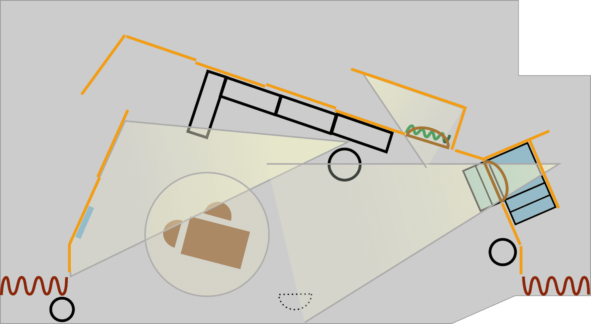
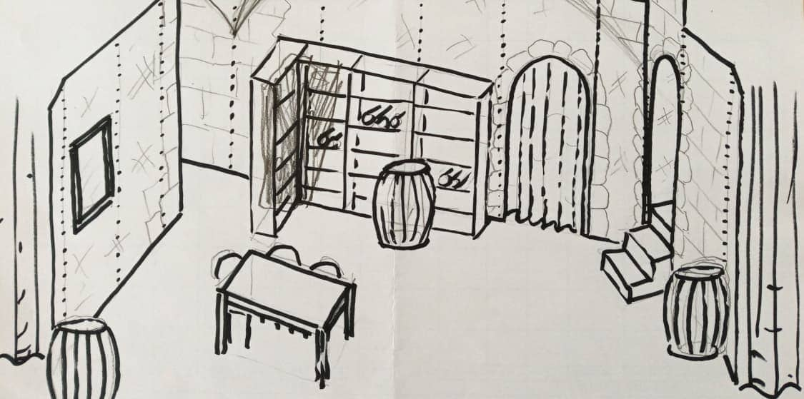
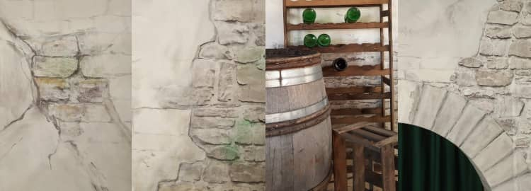
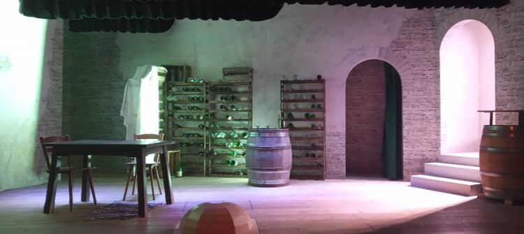
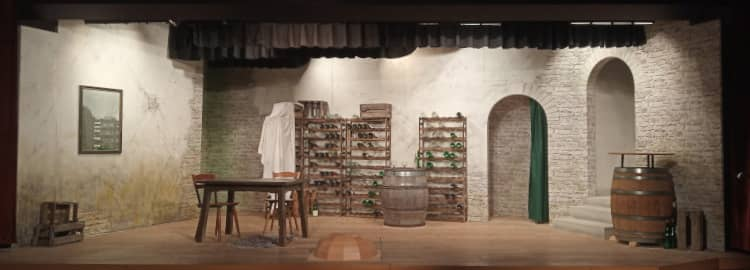

@charak
@charakÜber die Bühne zum „Vampir“
Derzeit dreht sich bei mir alles um unser Theaterstück „Der Vampir von Zwicklbach“. Wir haben diese Woche noch drei Hauptproben, am Freitag ist dann die Premiere. Als Regisseur komme ich gerade zu kaum etwas anderen. Warum nicht aus der Not eine Tugend machen und aus meinen Gedanken dazu noch einen Blogeintrag schreiben? Zur selbstkomponierten Musik im Vampir habe ich ja bereits gebloggt.
Wo geht’s hier rein?
Das Bühnenbild zeigt einen Weinkeller, so stand es in der Stückbeschreibung. Es sollten Holzfässer und Regale mit alten Weinflaschen herumstehen sowie ein Tisch mit Sitzgelegenheiten. Die Atmosphäre soll „etwas unheimlich, aber doch gemütlich“ sein – oha! Außerdem sollte es drei Abgänge geben: Einen hoch ins Gutshaus, einen in einen Nebenraum, dazu eine Geheimgang nach draußen.
Mit dieser Beschreibung im Hinterkopf habe ich das Stück durchgesehen und geguckt, welche Handlungen sich aufs Bühnenbild auswirken könnten. Gefunden habe ich:
- Der Tisch muss so stehen, dass man halb darauf liegen konnte
- Etwas/Jemand sollte sich unter/neben einem Weinfass verstecken können
- Eine Figur verwechselt Nebenraum und Abgang nach oben – diese beiden Zugänge sollten also vielleicht nebeneinander liegen
- Figuren betrachten sich im Spiegel (der muss in erreichbarer Nähe hängen, aber nicht zu präsent und vielleicht so, dass es keine störenden Reflexionen gibt)
- Jemand betritt den Keller unbekümmert durch den Geheimgang, also kein kompliziertes Aufschwing-Regal davor
- Jemand wird durch den Geheimgang hereingetragen: Definitiv kein kompliziertes Aufschwing-Regal
Unheimlich, aber gemütlich
Wie wirkt ein Raum leicht gruselig, aber dennoch gemütlich? Ich habe beschlossen, die Farben eher neutral zu halten (v. a. Steingrau und Flaschengrün) und dafür mit buntem Licht zu arbeiten. Fürs Unheimliche nutze ich mitten auf der Bühne eine versteckte Lichtquelle, welche die Figuren von unten anleuchten kann und große Schatten auf die linke Wand wirft. Außerdem habe ich beschlossen, die Rückwand deutlich schräg zu stellen; das nimmt man aus der Entfernung nicht so richtig wahr, es verleiht dem Raum aber hoffentlich eine etwas eigenartige Wirkung.

Die schräge Wand führte beim Aufbau zu Erstaunen („Da ist ja die halbe Bühne weg“) und war später bei der Lichtsetzung eine kleine Komplikation, weil die Stangen für die Schweinwerfer natürlich parallel zum Bühnenportal laufen – aber das wusste ich zu diesem Zeitpunkt noch nicht.
Damit sich alle das Bühnenbild besser vorstellen konnten und auch für die Besprechung mit dem Grundierer und dem Bühnenmaler, habe ich noch eine räumliche Skizze angefertigt:

Farblich … zurückhaltend
Die Wänden wollte ich zum einen aus grobem Mauerwerk (mittelgrau) und zum anderen mit Kalk verputzt haben. Eine gute Idee des Malers war es, das Mauerwerk mit einer Steinmotiv-Tapete herzustellen. Dann hatten wir zwar keine so großen Steinblöcke, aber es spart viel Zeit, als wenn man alles hätte malen müssen. Die Farbwahl fand der Maler ein wenig trist (zu Recht!), hat mit vielen Details aber ein richtig schönes Bühnenbild gezaubert.

Die Weinfässer haben wir leihweise vom Pfarrer bekommen, dessen Bruder eine Brennerei hat. Zuletzt wurden noch die Weinregale aufgebaut und mit leeren Flaschen gefüllt – dann war die Bühne soweit, um das Licht einzurichten.
Licht und dessen Abwesenheit
In meinem Studium hatte ich Seminare zum Thema Lichtsetzung, was mir immer sehr großen Spaß gemacht hat. Für das Theaterstück konnte ich gut darauf zurückgreifen und habe mich entschieden, zwischendurch auch mal mit eher dunkler Bühne zu arbeiten. In den Szenen, in denen es etwas unheimlicher zugehen soll, verwende ich bläulich-grünliches Licht. In den gemütlicheren Szenen ist alles deutlich heller und in warmen Farben ausgeleuchtet (von Orange sogar bis Pink).
Außerdem setze ich drei gezielte Lichtkegel ein: Einen Scheinwerfer verstecke ich hinter dem Weinfass in der Bühnenmitte. Er strahlt Figuren, die hinten links durch den (dunkel gehaltenen) Geheimgang auftreten, unheimlich von unten an und wirft große Schatten auf die linke Wand.
Der zweite Lichtkegel fällt durch den Eingang rechts – also von oben wo es aus dem Keller geht. Er stellt die Verbindung zum Außen, Friedlichen, Normalen her. Wenn die Bühne allerdings ansonsten dunkel ist, dann scheint dieser Spot von oben die Figur, die aus dem Nebenkeller (Vorhang rechts hinten) kommt, von der Seite an und lässt sie sonst im Dunkeln. Das kann ich mir als unheimliche Beleuchtung zu nutze machen.

Der dritte Lichtkegel schließlich wirkt gar nicht gruselig, sondern heimelig. Er hebt den Tisch und die Stühle hervor, und erzeugt eine warme Lichtinsel, wenn der Rest des Raums dunkel ist. Wenn zwei Figuren am Tisch in ein romantisches Gespräch versinken, kann ich hier sogar einen pinken Schimmer einsetzen. Hier noch die Bühne, wenn sie hell und gemütlich ausgeleuchtet ist:

So, das soll es hier im Blog aber gewesen sein mit den Artikeln zum „Vampir von Zwicklbach“. Ich bin schon sehr gespannt, wie unser Stück beim Publikum ankommt …